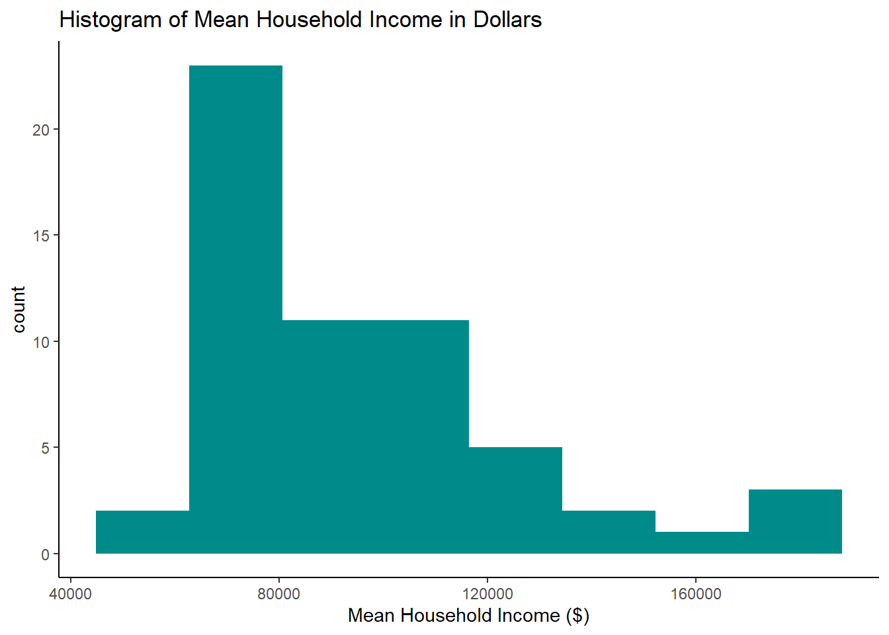
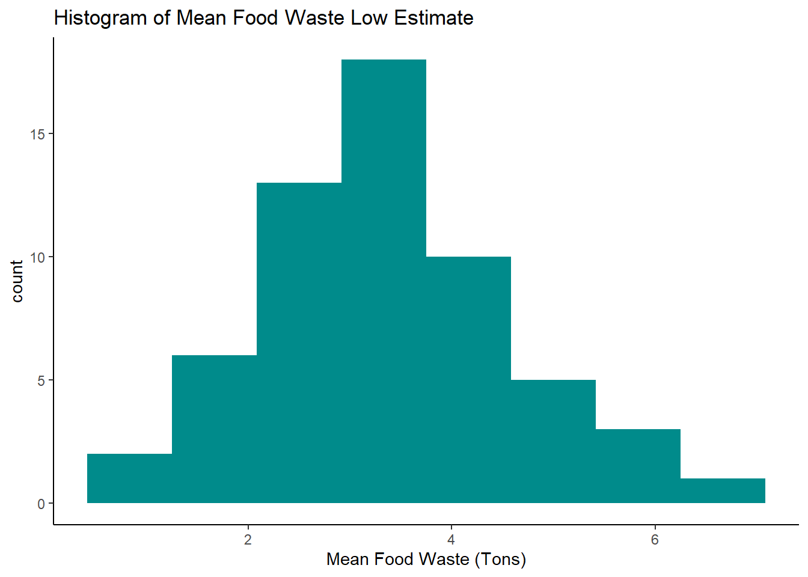
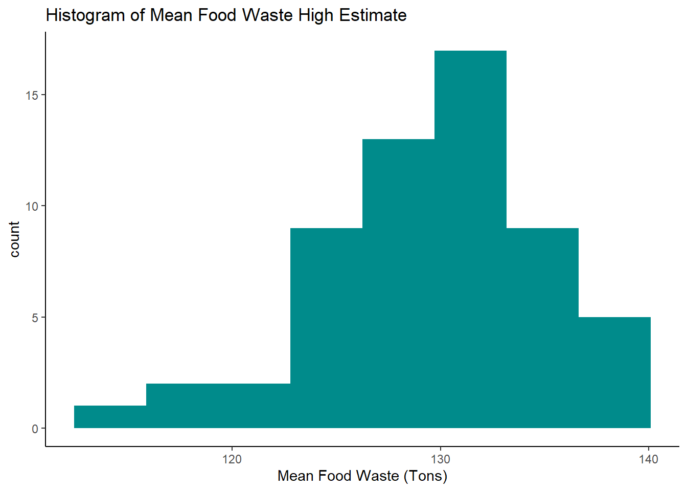
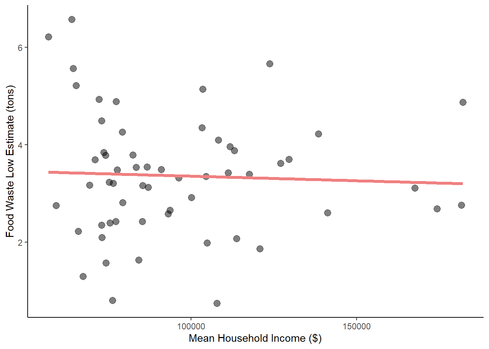
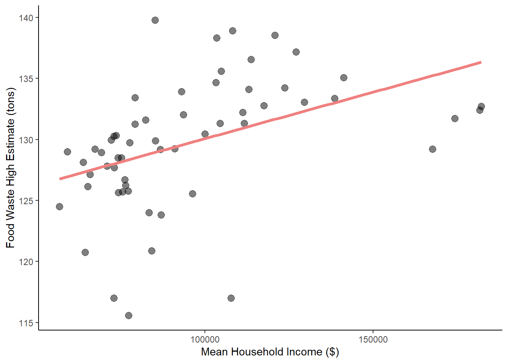

Researching if there is a relationship between the amount of food waste produced and household income
Author
Ruth Enriquez
Published
December 5, 2022
Question
I wanted to look at the relationship between food waste production and household income, specifically do households with higher income produce more food waste? I wanted to investigate this relationship because 10% of American’s suffer from food insecurity, yet every year we waste 40% of all food. Of the food waste produced in America 31% of it is produced at the wholesale & retail level. I wanted to see if there was an opportunity to divert edible food waste/excess to individuals instead of landfills. I think this is an important topic to investigate because everyone should have access to food. This topic is also important because reducing the amount of food waste in landfills can help reduce the amount of methane produced and help to mitigate climate change. Doing a quick google search, I see there are others wondering about the effects of socioeconomic status on food waste production. There is a research paper, (Community social capital and status: The social dilemma of food waste), that look at the negative relationship food waste levels have related to local levels of social capital in Italy. However, I couldn’t find other’s asking a similar question for America. Though there seems to be a growing interest in food waste data and statistics. I think there is still a gap in the data collection of food waste produced in America therefore there isn’t a existing evidence on the question of do households with higher income produce more food waste in America.
Data
I got my food waste data from the (Environmental Protection Agency)(EPA) & my household income data from the (United States Census Bureau). For this project, I decided to shrink my scope & to focus on food waste produced at the wholesale & retail level & household income in California counties.
I quickly learned that most companies do not rigorously track food waste, so all the numbers I used from the EPA data are estimates. From the data the EPA was able to collect they ran it through an algorithm that produced low and high estimates of food wasted for the year. There was little transparency on how the EPA calculated the low and high food waste estimates. With this limitation, I decided to apply my analysis to both estimates provided to see if there was a relationship.
Show the code
library(here)library(tidyverse)library(janitor)library(readxl)library(dplyr)library(ggplot2)library(sjPlot)library(rempsyc)library(broom)#loading food waste data on wholesale and retail foodRaw <-read_excel(here("data", "foodWaste", "Food_Wholesale_Retail.xlsx"), sheet ="Data") |>clean_names() |>mutate(excessfood_tonyear_lowest =as.numeric(excessfood_tonyear_lowest), excessfood_tonyear_highest =as.numeric(excessfood_tonyear_highest)) |>filter(is.na(excessfood_tonyear_lowest) ==FALSE, is.na(excessfood_tonyear_highest) ==FALSE, county !="NULL")#loading in CA county & income census dataCensus <-read_excel(here("data", "census2020.xlsx"), sheet ="Data2") |>clean_names()food <- foodRaw |>select("county", "state", "excessfood_tonyear_lowest", "excessfood_tonyear_highest") |>filter(state =="CA") |>group_by(county) |>summarise(Mean_Food_Waste_Low =mean(excessfood_tonyear_lowest), Mean_Food_Waste_High =mean(excessfood_tonyear_highest))#joining the food and census tables togetherfoodCensus <-left_join(Census, food, by ="county") |>select("county","mean_household_income_dollars","Mean_Food_Waste_Low","Mean_Food_Waste_High")#loading in county by region dataregion <-read_excel(here("data", "countyRegion.xlsx"))#Making a region/county data frame with food waste data#Use later for getting count to calculate pvaluefoodRegion<-left_join(foodCensus, region, by ="county")#Looking at regional trend for LOW estimatefoodRegionLow<-left_join(foodCensus, region, by ="county") |>group_by(Region) |>summarise(Mean_Low =mean(Mean_Food_Waste_Low),SD_Low =sd(Mean_Food_Waste_Low))#Looking at regional trend for HIGH estimatefoodRegionHigh<-left_join(foodCensus, region, by ="county") |>group_by(Region) |>summarise(Mean_High =mean(Mean_Food_Waste_High),SD_High =sd(Mean_Food_Waste_High))
Exploring my Data
Checking my data distribution
I decided to look at how my data was distributed by plotting it on a histogram. After some data wrangling this was the best, I could normalize my data.
Show the code
#checking my data distribution#incomeHist <- hist(foodCensus$mean_household_income_dollars)incomeHist <-ggplot(data = foodCensus)+geom_histogram(aes(x =mean_household_income_dollars), fill ="cyan4", bins =8)+theme_classic()+labs(title ="Histogram of Mean Household Income in Dollars",x ="Mean Household Income ($)")#lowHist <- hist(foodCensus$Mean_Food_Waste_Low)lowHist <-ggplot(data = foodCensus)+geom_histogram(aes(x = Mean_Food_Waste_Low), fill ="cyan4", bins =8)+theme_classic()+labs(title ="Histogram of Mean Food Waste Low Estimate",x ="Mean Food Waste (Tons)")#highHist <- hist(foodCensus$Mean_Food_Waste_High)highHist <-ggplot(data = foodCensus)+geom_histogram(aes(x = Mean_Food_Waste_High), fill ="cyan4", bins =8)+theme_classic()+labs(title ="Histogram of Mean Food Waste High Estimate",x ="Mean Food Waste (Tons)")incomeHist

Show the code
lowHist

Show the code
highHist

Is this there an obvious relationship?
Out of curiosity I also plotted my data in a scatter plot to see if there was an obvious relationship between food waste production and household income. For the low food waste estimate there didn’t seem to be a relationship, while the high food waste estimate seemed to have a positive relationship.
Show the code
#initially checking if there is a relationship between average household income and average food waste producedlowWaste <-ggplot(data = foodCensus,aes(x = mean_household_income_dollars,y = Mean_Food_Waste_Low)) +geom_point(size =3) +theme_classic() +labs(x ="Mean Food Waste Low (tons)",y ="Mean Household Income ($)")lowWaste
After exploring my data, I wanted to see if there really a relationship between the food waste was estimates and household incomes. To investigate this relationship further I decided that I wanted to run a linear regression model and do hypothesis testing. Part of the reason why I decided to do these analyses is because of the limitations I had with the data available. With the limited amount of data, I had I wasn’t able to do other analyses.
#Creating a linear regression on LOW food waste estimateregLow <-lm(Mean_Food_Waste_Low ~ mean_household_income_dollars, data =foodCensus)tab_model(regLow)
Mean Food Waste Low
Predictors
Estimates
CI
p
(Intercept)
3.54
2.44 – 4.64
<0.001
mean household income dollars
-0.00
-0.00 – 0.00
0.733
Observations
58
R2 / R2 adjusted
0.002 / -0.016
Show the code
#Plotting linear regression for LOW food waste estimatelowWastePlot <-ggplot(data = foodCensus,aes(x = mean_household_income_dollars,y = Mean_Food_Waste_Low)) +labs(x ="Mean Household Income ($)",y ="Food Waste Low Estimate (tons)") +geom_point(alpha =0.5, size =3) +geom_smooth(method ='lm', formula = y~x, color ="lightcoral", se = F, size =1.5) +theme_classic()lowWastePlot

When I ran the linear regression for the low food waste estimate, it showed that as household income increased there was a slight decrease in the amount of food waste produced. However, with such a high p-value, the mapped relationship is not significance. I do not have confidence to accept this relationship.
#Creating a linear regression on HIGH food waste estimateregHigh <-lm(Mean_Food_Waste_High ~ mean_household_income_dollars, data =foodCensus)tab_model(regHigh)
Mean Food Waste High
Predictors
Estimates
CI
p
(Intercept)
122.45
118.26 – 126.63
<0.001
mean household income dollars
0.00
0.00 – 0.00
0.001
Observations
58
R2 / R2 adjusted
0.193 / 0.178
Show the code
#Plotting linear regression for HIGH food waste estimatehighWastePlot <-ggplot(data = foodCensus,aes(x = mean_household_income_dollars,y = Mean_Food_Waste_High)) +labs(x ="Mean Household Income ($)",y ="Food Waste High Estimate (tons)") +geom_point(alpha =0.5, size =3) +geom_smooth(method ='lm',formula = y~x,color ="lightcoral",se = F,size =1.5) +theme_classic()highWastePlot

When I ran a linear regression on the high food waste estimates, the data said the opposite. As household income increased the increase in production of food waste was more significant for this data. In this model the p-value was much better, and the mapped relationship is significant. I would have more confidence accepting this relationship if both estimates were producing similar results with similar p-values.
Hypothesis Testing
I wanted to continue my analysis by doing a t.test. I chose two different regions in California with varying average household incomes. I chose to the Northern San Joaquin Valley region with an average household income of about 75,000 dollars & the San Francisco Bay Area region with an average household income of about 156,000 dollars. I wanted to see how the relationship between the two regions within the two different estimates.
#Computing point estimate of your parameter of interest#finding the mean inputs for the point estimate calculationmuSoSjL <- (foodRegionLow$Mean_Low[foodRegionLow$Region=="Southern San Joaquin Valley"])muSfBayL <- (foodRegionLow$Mean_Low[foodRegionLow$Region=="San Francisco Bay Area"])#calculating point estimatepointEstL =round(as.numeric(muSoSjL - muSfBayL) , 3)#calculating standard errorcountSoSj = foodRegion |>filter(Region =="Southern San Joaquin Valley") |>count()countSfBay = foodRegion |>filter(Region =="San Francisco Bay Area") |>count()#calling out the standard deviationsdSoSjL <- (foodRegionLow$SD_Low[foodRegionLow$Region=="Southern San Joaquin Valley"])sdSfBayL <- (foodRegionLow$SD_Low[foodRegionLow$Region=="San Francisco Bay Area"])#calculating standard errorseFoodL =round(as.numeric(sqrt(sdSoSjL^2/countSoSj + sdSfBayL^2/countSfBay)),3)#calculating test statistic/zscorezScoreL =round(((pointEstL -0)/seFoodL),3)#calculating our p-value using ptpvalL <-pt(zScoreL, 26, lower.tail =FALSE)#Doing a t.test to check my workt1 <-t.test(foodRegion$Mean_Food_Waste_Low[foodRegion$Region=="Southern San Joaquin Valley"], foodRegion$Mean_Food_Waste_Low[foodRegion$Region=="San Francisco Bay Area"])stats.table <-tidy(t1, conf.int =TRUE)nice_table(stats.table, broom ="t.test")
Method
Alternative
Mean 1
Mean 2
M1 - M2
t
df
p
95% CI
Welch Two Sample t-test
two.sided
3.73
3.18
0.56
0.96
9.00
.361
[-0.75, 1.87]
After running the t.test on the low food waste estimates I observed that there was a slight difference in the means. But with our p-value at 0.361 I would fail to reject the null hypothesis. For the low food waste estimates, I would fail to reject the null hypothesis. And for the high food waste estimates I would reject the null hypothesis.
#Computing point estimate of your parameter of interest#finding the mean inputs for the point estimate calculationmuSoSj <- (foodRegionHigh$Mean_High[foodRegionHigh$Region=="Southern San Joaquin Valley"])muSfBay <- (foodRegionHigh$Mean_High[foodRegionHigh$Region=="San Francisco Bay Area"])#calculating point estimatepointEst =round(as.numeric(muSoSj - muSfBay) , 3)#calling out the standard deviationsdSoSj <- (foodRegionHigh$SD_High[foodRegionHigh$Region=="Southern San Joaquin Valley"])sdSfBay <- (foodRegionHigh$SD_High[foodRegionHigh$Region=="San Francisco Bay Area"])#calculating standard errorseFood =round(as.numeric(sqrt(sdSoSj^2/countSoSj + sdSfBay^2/countSfBay)),3)#calculating test statistic/zscorezScore =round(((pointEst -0)/seFood),3)#calculating our p-value using ptpval <-pt(zScore, 26, lower.tail =FALSE)#Doing a t.test to check my workt2 <-t.test(foodRegion$Mean_Food_Waste_High[foodRegion$Region=="Southern San Joaquin Valley"], foodRegion$Mean_Food_Waste_High[foodRegion$Region=="San Francisco Bay Area"])stats.table <-tidy(t2, conf.int =TRUE)nice_table(stats.table, broom ="t.test")
Method
Alternative
Mean 1
Mean 2
M1 - M2
t
df
p
95% CI
Welch Two Sample t-test
two.sided
129.15
132.87
-3.72
-2.95
8.69
.017
[-6.59, -0.85]
Running the t.test on the high food waste estimates I observed that there was a greater difference in the means, but we had a p-value of 0.015. Once again, the p-value for the high food waste estimate was better than the low p-value.
Future Work
Overall, after my analyses I do not think I can confidently answer my question. The first reason why I cannot answer my question is the data itself. The data is based off estimates ran from an algorithm that had no transparency to how they were calculated. Second, the two estimates tell different stories and there isn’t enough information for me to know if the difference in story is due to how each estimate was calculated. The third reason I cannot answer my question is the p-values for the low estimate were not good. If I were to do this over again, I would hope that there would be actual food waste data and not estimates. I think having actual food waste data would help significantly. I think also having data for more than a year would also be helpful. Having more data would show more trends. It would also give me an opportunity to do a time series analysis.